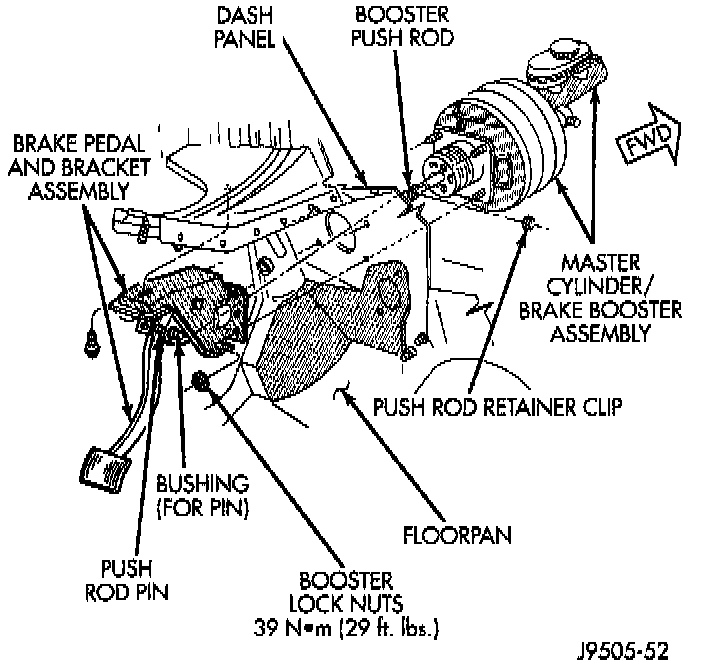

Brake Pedal Assy: Service and Repair

REMOVAL
1. Remove lower trim panel and air conditioning duct if necessary.
2. Remove steering column lower trim panel and bezel.
3. Remove necessary dash panel-to-instrument panel brace rods.
4. Remove retainer clip and washers attaching booster push rod to pedal pin.
5. Remove nut securing pedal shaft in support bracket.
6. Slide pedal shaft outward for clearance and remove brake pedal.
7. Remove pedal bushings if they are to be replaced.
INSTALLATION
1. Install new bushings in pedal. Lubricate bushings and pivot pin with Mopar multi-mileage grease.
2. Position pedal, sleeve and spacer(s) in bracket and install pedal shaft in support and through pedal.
3. Install new nut on pedal shaft. Shaft nut is specially formed and should not be reused. Be sure to install new nut to secure shaft.
4. Tighten pedal shaft nut to 27 Nm (20 ft. lbs.) on models with manual transmission. Tighten nut to 35 Nm (26 ft. lbs.) on models with automatic transmission.
5. Install bushing on pedal pin if removed.
6. Install booster push rod on pedal pin. Secure push rod to pedal with retainer ring and washers.
7. Install dash brace rod, if equipped.
8. Install instrument panel trim and air conditioning duct if removed.
9. Check and adjust brake lamp switch if necessary.